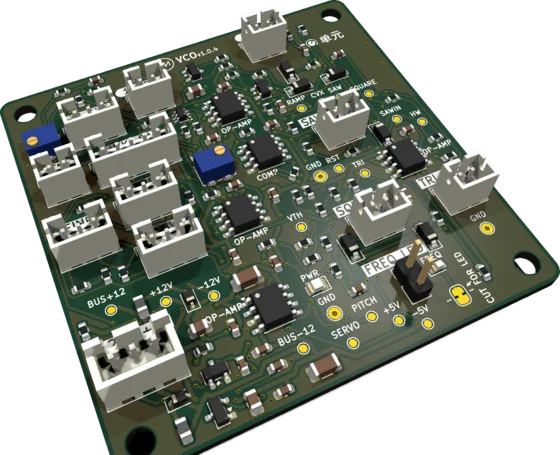
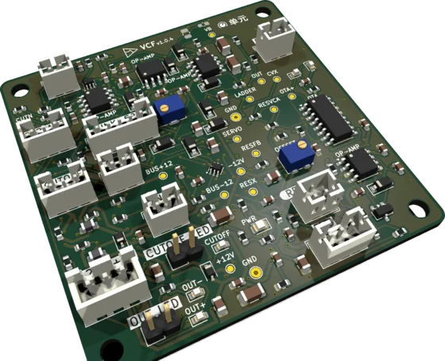
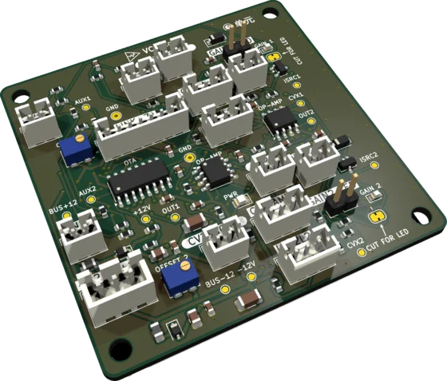
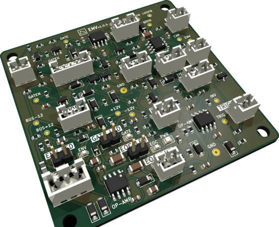
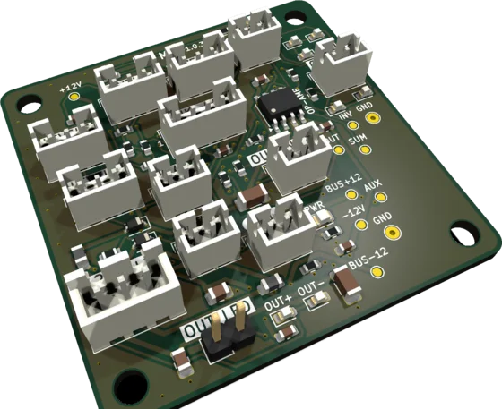
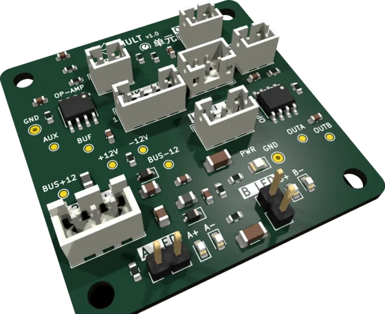
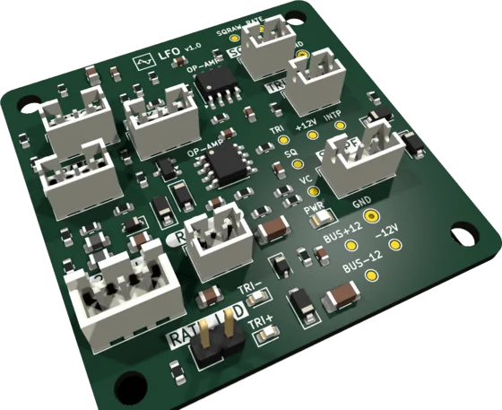
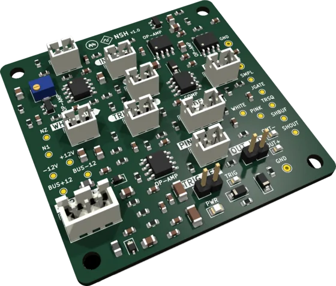
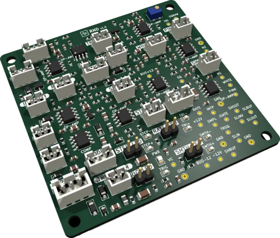
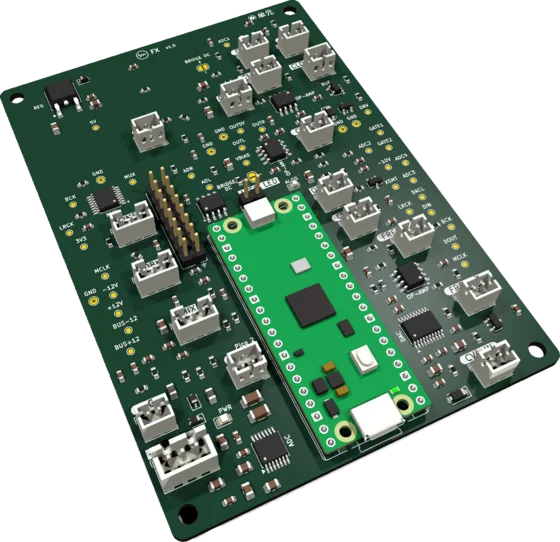

VCO
A discrete 1 V/oct oscillator with saw, square and triangle outputs, hard sync, FM and an octave switch.
Being madeThe series itself. Each minimodule is one 2-layer board with its own power connector, a JST PH connector for every jack, pot and switch, and a LINK connector that carries its signals to the next board. The boards can sit in a project box with the controls wired to them, or sideways behind an 8 HP front panel; every panel shares one layout, so one universal panel fits them all.
The VCO, VCF, VCA, envelope and mixer are in the first test order. The others have their parts placed and wait to be routed until the first ones prove the circuits. The op-amp board is under tools.

A discrete 1 V/oct oscillator with saw, square and triangle outputs, hard sync, FM and an octave switch.
Being made
A four-pole diode-ladder low-pass with 1 V/oct cutoff and voltage-controlled resonance that keeps its bass.
Being made
Two linear VCAs on one dual OTA, each with CV amount and level, normalled so one CV can drive both.
Being made
An ADSR envelope on a CMOS 555 timer, with loop, a manual gate button, trigger, end-of-cycle and inverted outputs.
Being made
A four-input DC mixer for audio and CV, with an inverted output and an LED soft limiter.
Being made
One input buffered to two outputs, each with its own level, for audio or CV.
In design: parts placed, not routed yet
A voltage-controlled LFO with triangle and square, from 0.06 Hz up into audio, with a ramp and saw switch.
In design: parts placed, not routed yet
White and pink noise and a sample and hold on one board, the S&H's input normalled to the noise.
In design: parts placed, not routed yet
A random voltage source: an LFO clocks a sample and hold fed with noise, and a slew smooths the steps.
In design: parts placed, not routed yet
The first digital board: stereo in and out round a Raspberry Pi Pico 2, the effect chosen by its firmware.
In design: parts placed, not routed yet